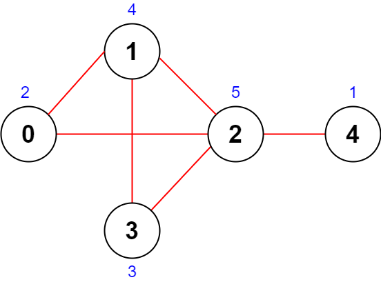
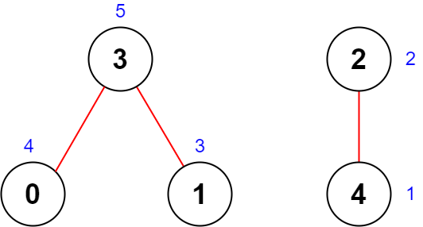

| Category | Difficulty | Likes | Dislikes |
|---|---|---|---|
| Algorithms | Medium | 1344 | 84 |
microsoft | amazon | hrt
You are given an integer n denoting the number of cities in a country. The cities are numbered from 0 to n - 1.
You are also given a 2D integer array roads where roads[i] = [ai, bi] denotes that there exists a bidirectional road connecting cities ai and bi.
You need to assign each city with an integer value from 1 to n, where each value can only be used once. The importance of a road is then defined as the sum of the values of the two cities it connects.
Return the maximum total importance of all roads possible after assigning the values optimally.
Example 1:

Input: n = 5, roads = [[0,1],[1,2],[2,3],[0,2],[1,3],[2,4]]
Output: 43
Explanation: The figure above shows the country and the assigned values of [2,4,5,3,1].
- The road (0,1) has an importance of 2 + 4 = 6.
- The road (1,2) has an importance of 4 + 5 = 9.
- The road (2,3) has an importance of 5 + 3 = 8.
- The road (0,2) has an importance of 2 + 5 = 7.
- The road (1,3) has an importance of 4 + 3 = 7.
- The road (2,4) has an importance of 5 + 1 = 6.
The total importance of all roads is 6 + 9 + 8 + 7 + 7 + 6 = 43.
It can be shown that we cannot obtain a greater total importance than 43.Example 2:

Input: n = 5, roads = [[0,3],[2,4],[1,3]]
Output: 20
Explanation: The figure above shows the country and the assigned values of [4,3,2,5,1].
- The road (0,3) has an importance of 4 + 5 = 9.
- The road (2,4) has an importance of 2 + 1 = 3.
- The road (1,3) has an importance of 3 + 5 = 8.
The total importance of all roads is 9 + 3 + 8 = 20.
It can be shown that we cannot obtain a greater total importance than 20.
Constraints:
2 <= n <= 5 * 1041 <= roads.length <= 5 * 104roads[i].length == 20 <= ai, bi <= n - 1ai != bi